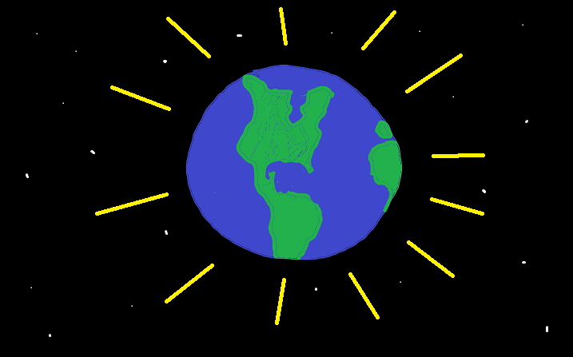
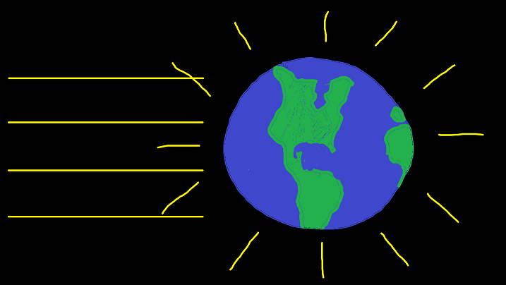

You almost certainly have heard of climate change if you follow the news. Climate change (sometimes called "global warming") is a global phenomenon where the all the temperatures of all the places on Earth taken together increase. Some places may warm, some may cool, but the average of all temperatures increase. The following table shows that the temperature has been above average over the last several years and the increase tends to get bigger:
| 2008 | 2009 | 2010 | 2011 | 2012 | 2013 | 2014 | 2015 | |
|---|---|---|---|---|---|---|---|---|
| Degrees C above Average | 0.53 | 0.64 | 0.72 | 0.60 | 0.63 | 0.65 | 0.74 | 0.87 |
The Earth does not warm on its own for no reason. The Sun radiates energy down on the Earth.
The Earth also radiates. It throws off radiation into empty space energy in all directions. This causes the Earth to lose energy.
When the amount of energy from the Sun is balanced with the amount of energy radiating away from the Earth, the temperature stays steady overall.
There are many things that go into this balance. On the next page, we will discuss one of these elements: the atmosphere.
Next PageAlso check out Take Part's page on Climate Change. This page has many advanced features and has a clean layout. The HTML script itself doesn't have much in the way of indents and it has up to four div's nested without comments, and this makes it difficult to read.